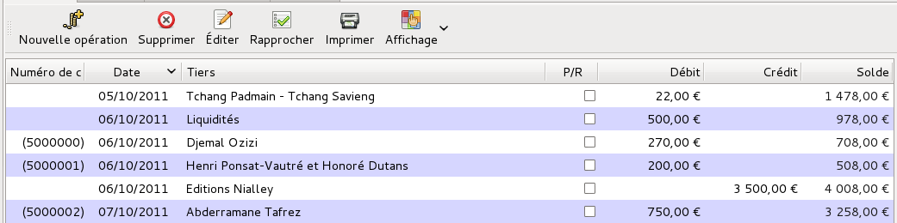

Les rapprochements bancaires servent à vérifier la bonne correspondance entre l’historique des opérations dans votre compte bancaire et les opérations saisies dans Grisbi. Faire un rapprochement bancaire consiste donc à faire une comparaison entre un relevé de votre compte bancaire et les opérations enregistrées dans le compte correspondant dans Grisbi. Un rapprochement dans Grisbi est une représentation d’un relevé bancaire, comprenant un solde initial, des opérations et un solde final. Cette représentation est figée, comme le relevé bancaire. Donc une fois qu’un rapprochement est terminé et est correct, on ne devrait pas avoir à le modifier, sauf dans des cas exceptionnels.
Il est conseillé de faire les rapprochements de vos comptes régulièrement : cela permet aussi de détecter, autant dans Grisbi que dans votre relevé bancaire, des oublis ou des erreurs de saisie d’opérations, des décalages de tirage d’opérations, l’existence de frais bancaires, etc.
Pour faire un rapprochement bancaire, munissez-vous du relevé de votre compte bancaire, et affichez la liste des opérations du compte correspondant sur Grisbi (voir le chapitre 8, Opérations d’un compte).
Pour avoir accès à la fonction de rapprochement bancaire, cliquez sur Rapprocher dans la barre d’outils.

Figure 9.1: Liste des opérations pendant un rapprochement
Les opérations s’affichent alors en mode Vue simple (une seule ligne), et la zone de rapprochement apparaît à gauche, en-dessous du panneau de navigation.
L’affichage et le fonctionnement de la liste d’opérations se comportent de la même manière qu’en dehors de la fonction de rapprochement, en résumé : largeur et libellé des colonnes, déplacement de la liste, affichage des opérations, menu contextuel, affichage des champs, tri des opérations.
Vous pouvez donc exécuter sur cette liste les mêmes actions qu’en dehors de la fonction de rapprochement, que ce soit au moyen de la barre d’outils ou du menu contextuel : sélection, création, ventilation, modification, suppression, etc. Reportez vous pour cela au chapitre 8, Opérations d’un compte.
La zone de rapprochement comporte plusieurs éléments :
Le N° rapprochement est le seul paramètre qui permet d’identifier à coup sûr un rapprochement quelconque ; ce numéro peut comprendre du texte et des nombres. Par défaut, Grisbi attribue un numéro à chaque rapprochement, composé du nom du compte concerné, suivi d’un nombre ; ce nombre est incrémenté automatiquement au rapprochement suivant. Ce N° rapprochement est donc unique pour chaque rapprochement d’un compte, et il est visible dans le menu Préférences - Rapprochement (voir la section 22.3.4, Rapprochement.
Grisbi vous permet de personnaliser cette numérotation, qui devra être de la forme «texte + nombre », pour être unique pour chacun de vos rapprochements. Vous pouvez inventer la numérotation qui vous convient, et ce, compte par compte ; par exemple, ils pourront porter le même numéro que vos relevés bancaires. Si, pour quelque raison, le N° rapprochement ne respecte pas cette forme, il vous sera difficile de retrouver son contenu, c’est à dire les opérations qui lui appartiennent (voir la section 9.2.2, Contenu d’un rapprochement) ; cependant, vous pourrez toujours y modifier le numéro de chaque rapprochement, mais cela risque d’être assez fastidieux …
Note : s’il vous est possible d’avoir la même numérotation pour les rapprochements (par ex. de 1 à n) dans des comptes différents, il est impossible de l’avoir plusieurs fois dans un même compte. Vous pourrez par exemple prévoir une numérotation du type année-numéro : 2003-01 pour votre premier relevé mensuel de 2003, et ensuite Grisbi numérotera les suivants jusqu’à 2003-12 ; l’année suivante vous numéroterez le premier 2004-01, etc. Quelque soit le contenu de votre numérotation, il suffit que la fin soit numérique pour que Grisbi sache l’incrémenter, par exemple AV-001 ou REM-001, ou bien encore CCP-1106 pour compte CCP année 2011 mois 06, qui ne permettra aucune confusion sur les comptes et les dates.
Les date et solde du rapprochement précédent sont automatiquement repris du dernier rapprochement, donc ne sont pas modifiables, et sont en grisé. Mais ce ne sera bien évidemment pas le cas lors du premier rapprochement, où le solde initial est celui que vous avez entré lors de la création du compte (voir la section 7.3, Propriétés d’un compte).
La date du rapprochement en cours peut être saisie avec le clavier ou le calendrier, disponibles comme dans tout champ de date dans Grisbi (voir les sections 8.6.2, Saisie de date au clavier ou 8.6.3, Saisie de date au calendrier).
Attention : la date finale du rapprochement précédent et la date initiale du rapprochement en cours peuvent être identiques, ou doivent se suivre chronologiquement, pour ne pas avoir de chevauchement de périodes de rapprochement ; cependant, si vous avez fait de telles erreurs, Grisbi pourra probablement les corriger : voir la section 9.2, Gestion des rapprochements des comptes.
Afin de faciliter l’identification des opérations pendant le rapprochement vous pouvez toujours changer l’ordre d’affichage des opérations, pour qu’il corresponde à celui de votre relevé bancaire. Ou bien, si vous avez beaucoup d’opérations à rapprocher, vous pouvez par exemple les classer par ordre de montants croissants ou décroissants, pour faciliter la recherche d’un montant ; quand le rapprochement sera terminé, vous rétablirez le classement par date pour avoir un solde juste en fin de liste (voir la section 8.2.4, Tris).
Vous pouvez aussi trier les opérations en cochant la case Tri par mode de règlement dans la zone de rapprochement, ou bien en configurant l’ordre d’affichage selon ces modes de règlement, individuellement pour chaque compte, dans le menu Édition - Préférences (voir la section 22.3.5, Option de tri pour les rapprochements).
Vous pouvez encore masquer ou afficher les opérations rapprochées («R »), grâce aux choix proposés par la fonction Affichage de la barre de menus ou de la barre d’outils, ou bien, plus simplement, par la combinaison de touches <Alt><R>.
La procédure pour opérer un rapprochement est la suivante :
Note : l’incrémentation ne fonctionnera que si la numérotation de votre rapprochement se termine par un chiffre, par exemple «CCP-201106 », et pas du tout dans le cas de «201106-CCP ».
Après un rapprochement, si vous voulez ne plus afficher les opérations rapprochées («R ») dans la liste des opérations, sélectionnez, dans la barre de menus ou dans la barre d’outils, la fonction Affichage - Montrer les opérations rapprochées, ou bien, plus simplement, appuyez sur la combinaison de touches <Alt><R>. La même action réaffiche les opérations rapprochées.
Note : si vous annulez un rapprochement avant de l’avoir complètement terminé et validé, la liste d’opérations affichera comme «pointées » les opérations qui l’ont été pendant le rapprochement interrompu. Cela permet de reprendre le rapprochement ultérieurement. Vous pouvez cependant «dé-pointer » chacune de ces opérations par la combinaison de touches <Ctrl><P>.
Note : pour que la recherche d’erreurs éventuelles ne soit pas trop difficile, il est recommandé de faire le rapprochement bancaire régulièrement, si possible à chaque réception de relevé de banque, et de toutes façons quand il n’y a pas trop d’opérations non pointées.
Pour gérer les paramètres des rapprochements, vous disposez des fonctionnalités suivantes :
Un assistant permet aussi d’aider à rétablir la continuité des rapprochements et de réparer certaines erreurs.
Ces fonctionnalités sont disponibles dans le menu Édition - Préférences, et sont décrites en détail dans la section 22.3.4, Rapprochement.
Vous ne pouvez afficher le contenu d’un rapprochement que s’il dispose d’un N° rapprochement unique. Si ce n’est pas le cas, vous devrez d’abord modifier le N° rapprochement pour chacun des rapprochements du compte, avec un numéro de la forme «texte + nombre », le nombre s’incrémentant à chaque rapprochement suivant (voir la section 22.3.4, Rapprochement). Si c’est déjà le cas, vous pouvez utiliser l’une de ces deux méthodes :
Pour afficher les opérations d’un compte suivant un tel tri, procédez comme suit :
Pour créer un état des opérations appartenant à un N° rapprochement connu, procédez comme suit :
Vous pouvez toujours modifier ensuite vos sélections en cliquant sur l’outil Propriétés dans la barre d’outils (voir aussi le chapitre 21, Création d’un état).
Il se peut que vous n’arriviez pas à faire votre rapprochement correctement. Cela peut être dû à des erreurs de pointage, de saisie d’opération, ou même d’erreurs dans votre relevé de compte bancaire. Ces erreurs sont généralement facilement identifiées en reprenant avec attention le pointage des opérations, tant sur Grisbi que sur votre relevé de compte. C’est aussi pour cela que les rapprochements doivent être faits régulièrement, ou tout au moins tant que le nombre d’opérations à pointer ne dépasse pas quelques dizaines.
Note : pour tous les cas décrits dans les sections suivantes, commencez par faire un test de débogage de votre fichier de comptes, qui vous permettra de préciser où se trouvent d’éventuels problèmes (voir la section 23.1, Déboguer le fichier de comptes).
Si vous utilisez Grisbi depuis un certain temps, et que vous ouvrez un nouveau compte bancaire à la banque, comme le solde de ce compte est nul, vous créez un nouveau compte dans Grisbi avec un solde initial nul ; vous saisirez le premier versement sur le compte bancaire par une opération initiale dans le nouveau compte dans Grisbi. C’est le cas le plus simple, qui ne pose de problème pour aucun rapprochement ultérieur.
Par contre, si vous avez un compte bancaire depuis longtemps et que vous commencez à utiliser Grisbi, vous créerez un compte dans Grisbi, soit en mettant un solde initial égal au solde du compte bancaire à ce jour, dans l’onglet Propriétés du compte, soit en créant une opération de dépôt initial du même montant dans la liste des opérations du compte.
De ce fait, si vous voulez par la suite, pour avoir toutes vos opérations dans Grisbi, entrer des opérations antérieures à la date de première utilisation de Grisbi, vous devrez soit modifier le solde initial du compte, soit modifier l’opération de dépôt initial, du montant total de ces opérations antérieures. Dans ces deux cas, le solde des opérations dans la liste des opérations sera modifié automatiquement et sera correct, mais le solde initial de votre premier rapprochement, indiqué dans l’onglet Rapprochement du menu Édition - Préférences, ne sera pas modifié et sera donc incorrect ; ce qui fait que le rapprochement incluant ces opérations ne pourra pas être bon. De plus ces opérations ne seront associées à aucun rapprochement. Dans l’un et l’autre cas, voici comment résoudre cela :
Attention : il est fortement recommandé de faire une sauvegarde de votre fichier de comptes avant de faire les manipulations suivantes sur les rapprochements, car certaines erreurs pourraient rendre ce fichier inutilisable.
Si vous procédez en modifiant le solde initial du compte :
Si vous procédez en modifiant l’opération de dépôt initial :
Vous aurez alors une liste d’opérations avec un solde correct, tous les rapprochements seront corrects et toutes les opérations saisies ou modifiées seront associées à un rapprochement.